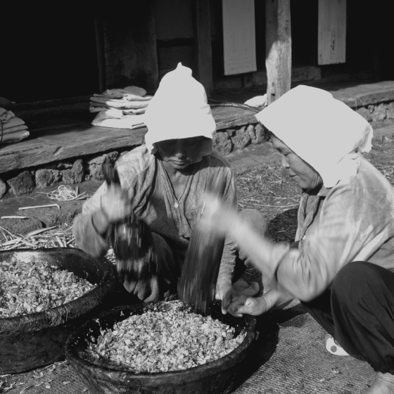
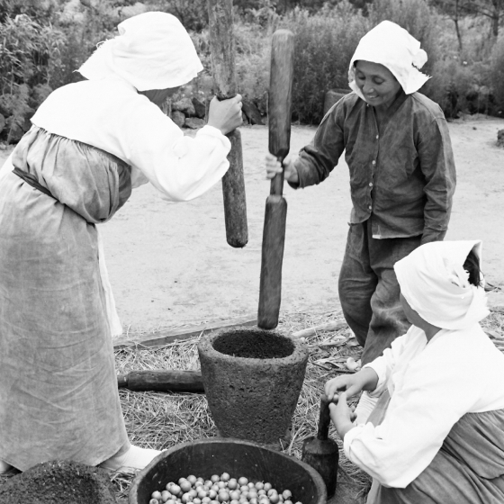

제주갈옷은 예로부터 제주인이 즐겨 입었던 노동복이자 일상복이다.
©강만보

제주 토종의 풋감 즙을 내어 만든 갈옷은 제주의 자연환경을 기반으로 제주인의 지혜를 모아내어 탄생한 걸작이며, 경제적이고 위생적일 뿐만 아니라 자연친화적이고 지속가능성을 확보한 생활밀착형 무형유산이라 할 수 있다.
©강만보

제주인들은 예부터 밭에서 농사를 짓거나 바다에서 고기를 잡을 때, 또는 산과 들에 풀어놓은 말과 소를 돌볼 때, 조상의 산소를 벌초하거나 공동체의 ‘수눌음(집단 노동)’을 할 때 등 언제든 갈옷을 입었다.